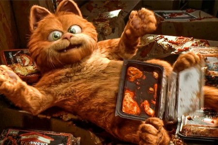
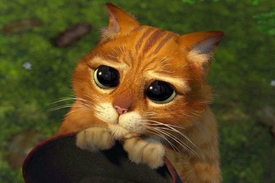

Grumpy Cat
(April 4, 2012 – May 14, 2019)Tardar Sauce, nicknamed Grumpy Cat, was an American Internet celebrity cat. She was known for her permanently "grumpy" facial appearance, which was, probably, one of the most iconic memes of all time.
Know more


Nyan Cat
nyan nyan nyan nyan nyan nyan nyan nyanCats? Yes.
Pop tarts? Absolutely.
Mix of them? YASS.
Hotel? Trivago.
The Cat in the Hat
furries...Wild from the start to the end.
Really good tho?
Dunno, just watch it, laughs guaranteed.

Cheshire
By Lewis CarollRIDDLE: What kind of cat can grin?
ANSWER: A Catenary.
— David Day, Queen's Quarterly (2010)